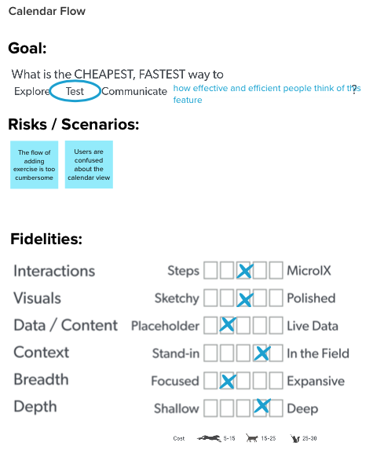

Summary
We wanted to understand the problem space around fitness and design for a solution to make the fitness lifestyle easy to adopt and maintain.
My Role
Lead Researcher
Designer
Process
Discover
Problem Framing
The current experience fitness apps provide is passive, users take most of the reponsibilities of planning, executing, and motivating themselves.
To better understand the problem, we created a Lean UX Canvas.
How might we improve the fitness experience so that users are more successful in keeping a fitness lifestyle?
Personas
We developed practical personas to explore what we think we know and to start the discussion of what we don’t know. We also used practical personas to focus on representative users and to prioritizing the user’s goals over a feature.
Risks
To Validate
Assuming reminder is effective in motivating exercise.
Research what motivates people to fulfill their plans.
Assuming planning brings greater value than burden to the average users.
Research the current methods the average users employ for their exercise routine.
Assuming it will be easy for users to adopt new flows.
Research current exercise flow of the average users.
Assuming tranisitioning to exercising with an app is easy.
Research how different personas adopt new technology.
User Research
Problem
We were at the discovery stage of our product development. We needed learn more to validate the risks associated with our practical personas. This research is going help us find out if we are right about what we already know and discover what we don’t know.
Research Goals
- Understand the targeted users’ recent experience on their fitness journey.
- Understand how targeted users approach the topic of fitness, the context, the struggles, and the delight.
- Validate the risks associated with personas.
Research Protocol
We developed a research protocal to help us stay focused and aligned on the goals of the resesarch.
Semi-Structured User Interview
We spent two weeks and met with 12 participants on Zoom. Each session was 30 minutes with one participation, one proctor, one notetaker, and two observers. We recorded each session after gaining consent from the participants, we also consolidated our notes at the end of each day.
Synthesizing
We used Affinity Mapping method to synthesize data and find themes.
User Quotes
In general, users have a difficult time keeping a fitness routine in their busy lives and finding workouts that fit their needs. They need an easy way to plan, personalize, and prioritize fitness. We believe we are able to help all three of them.
Key Insights
- Personalization and flexibility are desired when engaging with fitness products.
- People seek safe and effective exercises that provide guidance and make them feel good.
- The ability to plan and prepare ahead of time holds people accountable for exercise and makes establishing a routine easier.
- People seek direction and motivation in progress tracking and rewards.
- Social environment plays a big role in fitness and it comes in many forms, including workout buddies, group fitness, trainer feedback, and etc.
- People seek quick and simple exercise experience.
Constraints
We must
- provide personalization and customization
- provide the ability to plan and prepare
- provide progress/metric tracking and dynamic rewards
- provide visual guidance for exercise techniques
- provide a community for social aspects
We should
- provide proactive feedback
- provide categorized content for quick selection
- provide live group fitness option
Ideate
Story Mapping
To create a shared understanding in our team, we made a user story map to help understand user-focused solutions, identify holes, and break down discovery, design, and development into achievable pieces. We then can prioritize them and put them into action.
Sketching
With the story map, we were ready for our collaborative sketching sessions on Zoom.
We brought:
- problems
- key constraints
- sketching tools
- our wild ideas
Convergence
We applied constraints to our sketching, intergrated the best a number of ideas. We also voted on the unsure topics to narrow it down to 2-3 approaches.
Design Reviews
We wanted to deeply chanllenge our assumptions and turn sketpics to believes, so we held a design review session and invited our UX peers to the it.
We made changes based on the feedback received and created a user “happy path”.
Rapid Protoyping
To determine the “Right-Fi” prototype, we analyzed our goal for the prototype - we want to test what we think is the riskiest part of the happy path.
User Flow
To completely breakdown the user journey and flesh out each step, we created a user flow including task flow and wireflow.
Even at this stage, we continued to discover problems which helped us to began working on solutions.
Original Prototype
Weekly calendar view saves space on a mobile screen, it allows users to see their agenda and schedule workout in the most efficiant way.
The scheduling screen is in place to keep our app ecosystem consistent. It is also used for rescheduling workouts.
We made the filters based on the Gestalt grouping principals so that users don’t have to move too far to quickly select the desired workouts.
Test
Usability Testing
We scheduled 30-min usability testing session with 1 pilot study and 5 participants to evaluate the prototype and discover problems.
Methods
Think Aloud
We asked our participants to verbalize their thoughts while using the prototype.
Interview
We followed up with an interview to deep dive on the related behaviors observed in completing the tasks. We also asked our participants to rate the easiness of each task.
Major Findings
- Users found that the scheduling flow being a bit overly complex. How can we still keep our ecosystem (rescheduling, canceling) but simplify it?
- Users actually paused at the workout filter page longer before they figured out how to proceed. We need a solution to decrease user mental load and lessen the width but increase the depth.
Redefine
Base on our usability testing findings, we made changes to our prototype!
We made some tactic changes such as that we redesigned the button name [Today] and moved the location of the [Add] for a better layout.
We also decreased the breath but increased the depth of the filtering system to decrease user mental load.
We made a strategic change to have the ability to schedule time and date on the workout level. This simplied the adding workout flow but still stayed true to our ecosystem.
Future Work
- Evaluate the latest iteration of the prototype.
- Identify the MVP for developement.
- Create design systems of the MVP to guide development.
- Seek programmers who are interested in collaborating and start development.
- Continue research work to identify and prioritize solutions for Release 2.
Reflection
What I learned
I learned that a well-positioned introduction to users in a discovery research is very important. We either had to “pull” information out of the participants or they focused on discussing the current fitness apps they used because they thought that’s what we wanted to hear. So a good introduction informing the participants that want to understand their fitness lives in general is crucial on setting them up for success.
What Could've Gone Differently?
This is a 10-week design and research project utilizing Lean UX methodologies. If I had more time, I would like to design a survey for a competitive analysis prior to the discovery research to get a pulse on users’ unmet needs. We could then incoorporate it into our opportunity statement.